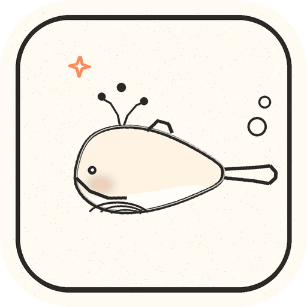

角色卡
人设、口吻、开场白、示例对话；兼容 SillyTavern 的 V1/V2 JSON 与 PNG 卡，可导出。

小肥鱼本地 AI 同人写作助手
装在你自己的手机上。角色卡、世界书、自动记忆、多角色群聊，写长篇不崩； 自备 API Key，数据不上云。
免费 · 开源 · 不需要注册账号
基于官方开源聊天客户端二次开发，写作工作流是另外做的。
人设、口吻、开场白、示例对话；兼容 SillyTavern 的 V1/V2 JSON 与 PNG 卡，可导出。
关键词 / 正则 / 递归触发；轮次门槛、包含排除、块内位置；角色卡自带世界书自动并入。
每 N 轮把剧情要点整理进角色记忆；向量召回只注入相关行，长篇不丢设定。
两个角色同场；@ 点名、轮流 / 随机、连续发言、双人同轮、单句长度控制。
同一问题多模型并发对比；官方 API 与第三方 OpenAI / Anthropic 兼容端点都能接。
14 个 system 块逐块开关、排序；存成模板并绑定模型，切模型自动套用。
8k~128k 预算，超出自动丢最旧轮次；长会话不超窗口、不悄悄烧 token。
流式中断、网关 5xx/429、空闲超时自动重连；已生成的部分会接着续写。
兼容官方客户端 ZIP 备份；会话导出 TXT / Markdown；换设备不丢数据。
会话存浏览器 IndexedDB，设置存本机；不需要注册，不上传聊天内容。
官方接口走 Files API；第三方接口自动压缩成 base64 内联发送。
提供 Android APK，不上应用商店也可安装；PWA 也可加到主屏幕。
角色卡 / 世界书 / 群聊 / 自动记忆都在设置里，截图等你来补。
本项目主要面向手机。电脑上如果你已经用 DeepSeek Harness + 插件，可以直接用；想跑本客户端则从源码启动。
GitHub 仓库
蓝奏云直链，免登录下载：
密码：1dpp
请用系统浏览器打开下载，装完直接可用；QQ 内置下载会把 APK 改名成
.apk.1，需要手动去掉后缀。
直链由 GitHub Pages 提供，国内访问可能较慢；蓝奏云更快。
安装 Node.js 20+ 后：npm run setup && npm run start。
首次使用需在设置里填写自己的 API Key；软件不内置任何 Key。安装 APK 需允许「未知来源」。
软件免费，赞助完全自愿，不影响任何功能。
软件内「设置 → 关于」也能找到支持入口；赞助完全自愿，不影响功能。